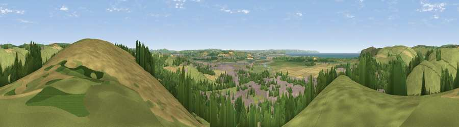

Viewpoint near Braunton
#5000 in England · top 16% of its area beats it · near BrauntonThe view, rendered

A 360° render of this exact spot computed from the terrain model, tree cover and land cover — summer colours, afternoon light, calibrated against photographs of famous viewpoints. Real trees, hedges and buildings will differ in detail.
The panorama
Grey silhouette: terrain skyline in each direction (720 bearings, Earth curvature and refraction included). Dashed green: skyline with trees (+15 m) and buildings (+8 m) as obstacles. Blue strip: how far the ground is visible on each bearing.
Where the view opens
Wedge length = distance to the farthest visible ground on that bearing (vegetation-aware). Rings at 10, 25 and 50 km.
What fills the view
48% grassland · 19% woodland · 16% built-up · 14% cropland · 3% water
Angular shares of the visible panorama (visual magnitude), not map area. Landscape diversity 0.60 (0–1 Shannon).
Key numbers
More beautiful places nearby
The staircase of upgrades: each row has a higher view potential than everything closer. Driving times are estimates from straight-line distance, calibrated against real road routing — check an actual route before setting out.
| Place | Direction | Drive | Score |
|---|---|---|---|
| Viewpoint near Braunton | WNW · 2 km | ~5 min | 76.1 |
| Viewpoint near Saunton | WNW · 4 km | ~9 min | 76.6 |
| Viewpoint near Croyde | WNW · 5 km | ~11 min | 83.7 |
| Viewpoint near Woolacombe | NW · 6 km | ~13 min | 84.7 |
| Viewpoint near Combe Martin | NE · 14 km | ~26 min | 86.9 |
| Viewpoint near Combe Martin | NE · 15 km | ~27 min | 88.9 |
| Holdstone Hill | NE · 17 km | ~29 min | 90.2 |
| The Knoll | ESE · 115 km | ~139 min | 91.0 |
51.11044, -4.15240 · source: screening · position refined by local search. Computed location — check access rights before visiting.